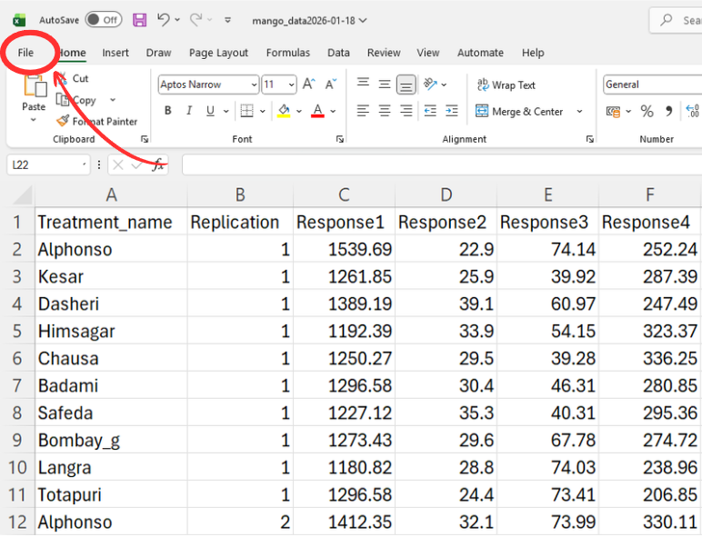
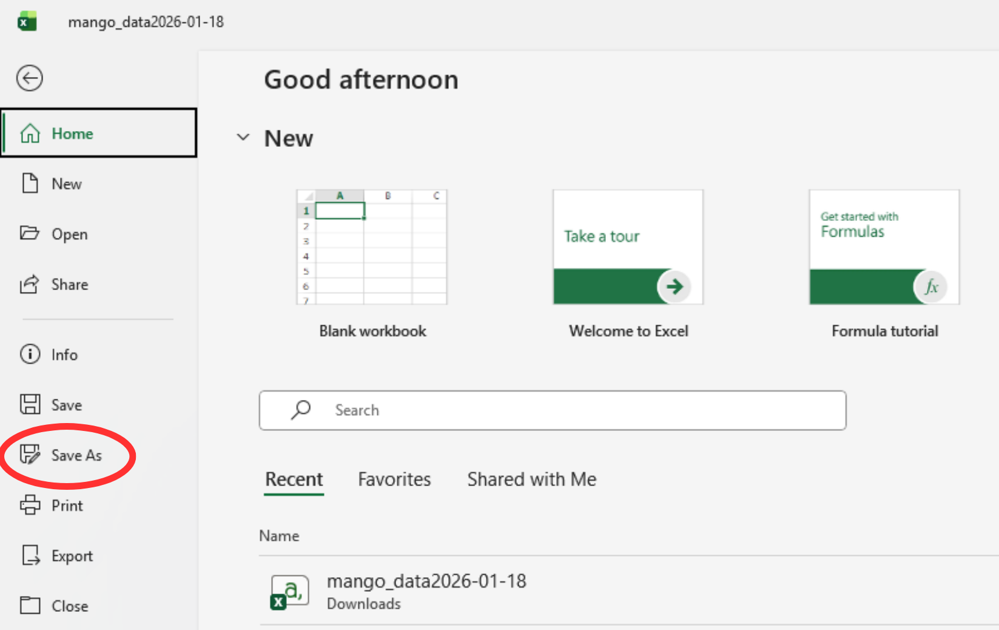
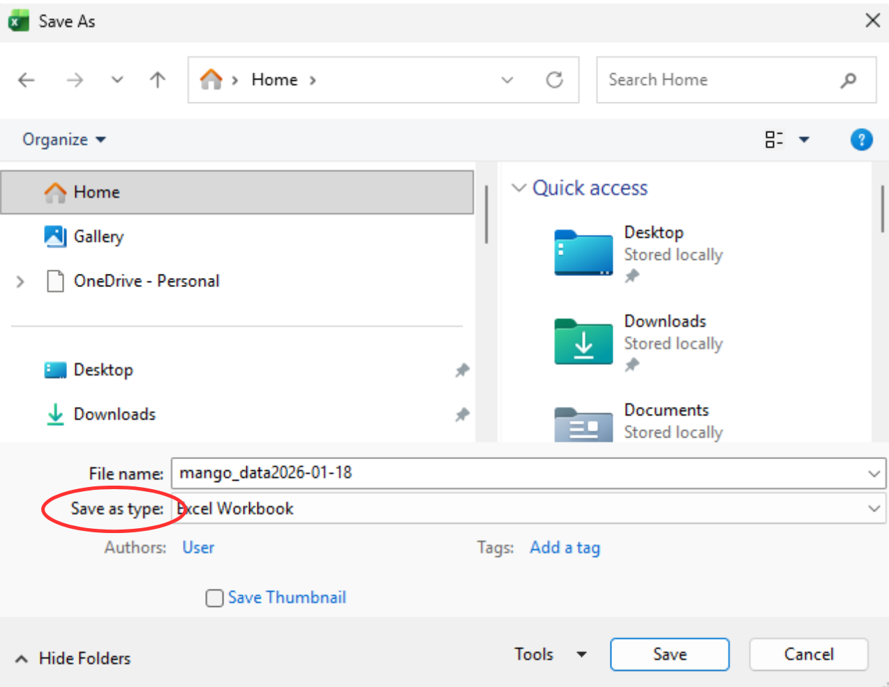
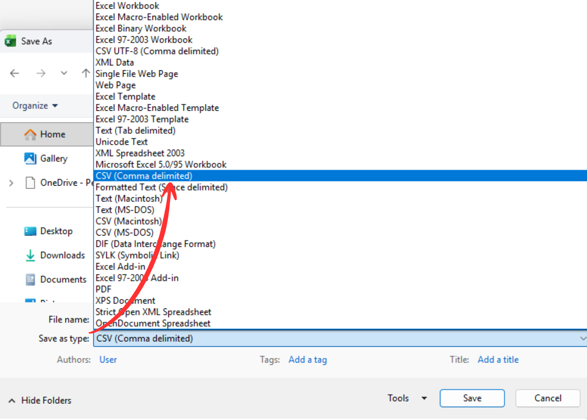

How to save your Excel file as CSV ?
Follow the simple steps below to correctly open your data in Excel and save it in
CSV (Comma delimited) format for analysis.
- Open your data file in Microsoft Excel.
- Ensure your data is arranged properly with column names in the first row.
- Click on File --> Save As.


- Choose a location where you want to save the file.
-
In the Save as type dropdown, select:
CSV (Comma delimited).


- Enter a file name and click Save.
Note: When Excel shows a warning while saving as CSV, click
Yes or OK. This is normal and will not affect your analysis.